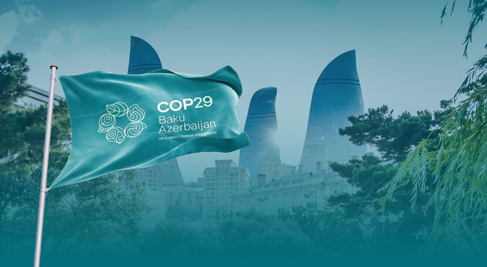
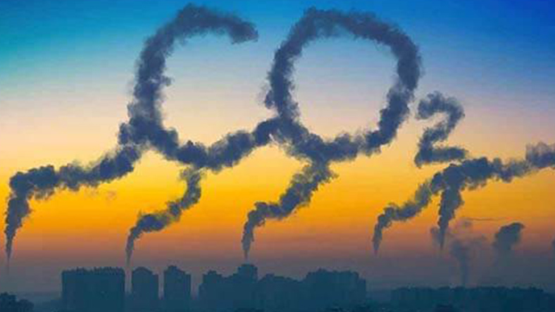

Azərbaycanın İqlim Yolu: COP 29 və Sonrası
Layihə Haqqında
İqlim dəyişikliyi müasir dövrün ən böyük qlobal problemlərindən biridir. Azərbaycanın bu problemə yanaşması milli səviyyədə dayanıqlı inkişaf və qlobal səviyyədə beynəlxalq əməkdaşlıq prinsiplərinə əsaslanır. Layihəmiz, Azərbaycanın COP 29 sammitinə hazırlıqları, ölkənin ekoloji hədəfləri və bu çərçivədə həyata keçirilən təşəbbüslər haqqında geniş məlumat təqdim edir.
Niyə Bu Layihə Vacibdir?
- İqlim dəyişikliyi, Azərbaycanın kənd təsərrüfatından tutmuş su təchizatına qədər bütün sahələrə təsir göstərir.
- Quraqlıq, daşqınlar və temperatur artımı kimi təbii fəlakətlər ölkə iqtisadiyyatına və əhalinin rifahına təhlükə yaradır.
- Milli və beynəlxalq səviyyədə iqlim tədbirlərinə dəstək olmaq, Azərbaycanın qlobal platformalarda mövqeyini gücləndirir.
COP 29 Nədir və Onun Əhəmiyyəti
COP 29
BMT-nin İqlim Dəyişikliyi Çərçivə Konvensiyasının (UNFCCC) 29-cu toplantısıdır. Bu sammit dünya ölkələrinin karbon emissiyalarını azaltmaq, təbii resursları qorumaq və iqlim dəyişikliyi ilə mübarizə üçün strategiyalar hazırladığı vacib bir platformadır.
COP 29
Azərbaycanın COP 29 Proqramı:
- Bərpa olunan enerji mənbələrinin genişləndirilməsi.
- Meşələrin bərpası və yaşıllıq ərazilərinin artırılması.
- Su resurslarının idarə olunması üzrə yeni texnologiyaların tətbiqi.
- Qlobal tərəfdaşlarla karbon emissiyalarının azaldılmasına dair layihələr.
Əsas Məqsədlər:
Əsas Məqsədlər:
- 2030-cu ilə qədər karbon emissiyalarının 40%-ə qədər azaldılması.
- 2050-ci ilə qədər karbon neytrallığına nail olmaq.
- Azərbaycanda yaşıl iqtisadiyyat modelinə keçid.
İqlim Dəyişikliyinin Azərbaycana Təsiri
Kənd Təsərrüfatı:
Temperatur artımı məhsuldarlığın azalmasına, xüsusən də quraqlığa həssas bölgələrdə ciddi problemlərə səbəb olur.
Su Resursları:
Kür və Araz çaylarının su səviyyəsinin azalması bölgələrdə su təchizatını çətinləşdirir.
Biomüxtəliflik:
Təbiətdəki ekosistemlərdə qeyri-sabitlik yaranır, bəzi bitki və heyvan növlərinin azalması müşahidə olunur.
Şəhər İnfrastrukturu:
Artan yağışlar və daşqınlar şəhər mərkəzlərindəki infrastrukturu təhlükəyə atır.
Mənbələr:
- UNEP (United Nations Environment Programme) hesabatları.
- Azərbaycan Dövlət Statistika Komitəsi məlumatları.
- BMT-nin İqlim Dəyişikliyi Proqramı (UNFCCC).
Son Yeniliklər və Xəbərlər
Günəş və Külək Elektrik Stansiyaları:
Qarabağ bölgəsində yeni günəş və külək enerjisi layihələri həyata keçirilir. Bu stansiyalar, Azərbaycanın bərpa olunan enerji hədəflərinə çatmasında mühüm rol oynayır.
Yaşıl Şəhərlər" Təşəbbüsü:
Bakı və digər şəhərlərdə karbon emissiyalarını azaltmaq məqsədilə ictimai nəqliyyatın elektrikləşdirilməsi və yaşıllıq sahələrinin artırılması planlaşdırılır.
Meşələrin Bərpası:
2024-cü ildə Azərbaycan üzrə 1 milyon ağac əkilməsi məqsəd qoyulub. Bu təşəbbüs biomüxtəlifliyin qorunmasına və karbon qazının azaldılmasına yönəlib.
Ekoloji Maarifləndirmə Kampaniyaları:
Məktəblərdə və universitetlərdə iqlim dəyişikliyi ilə bağlı maarifləndirmə tədbirləri keçirilir.
Mənbələr:
- [Azərbaycan Enerji Nazirliyi Rəsmi Saytı](https://minenergy.gov.az)
- [UNFCCC Rəsmi Səhifəsi](https://unfccc.int)
- [Azərbaycan Ekologiya və Təbii Sərvətlər Nazirliyi](https://eco.gov.az)
Fəaliyyətə Qatılın!
Layihəmiz hər kəsi bu təşəbbüslərə dəstək verməyə çağırır. Aşağıdakı yollarla siz də iştirak edə bilərsiniz:
Ağac Əkmə Təşəbbüsləri:
Azərbaycanın müxtəlif bölgələrində keçirilən ağacəkmə tədbirlərinə qoşulun.
Tullantıların Azaldılması:
Tullantıların təkrar emalına başlayın və ekoloji təmiz məhsullardan istifadə edin.
Maarifləndirmə:
Sosial media vasitəsilə layihəmiz haqqında məlumat paylaşaraq daha çox insanı məlumatlandırın.
Könüllülük:
Layihələrimizə qoşularaq, daha yaşıl bir Azərbaycan üçün birlikdə hərəkət edin.